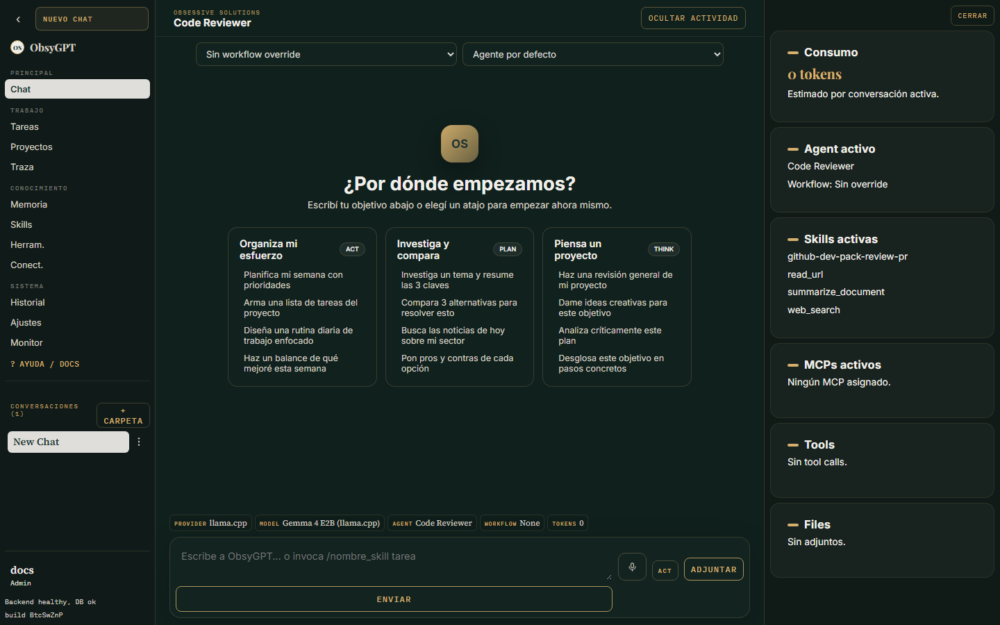

El asistente típico
- Responde texto bonito
- No puede tocar tus archivos
- Tú copias y pegas el resultado
- Se olvida de todo al cerrar
- Nadie sabe qué hizo ni por qué
«¿Y esto quién lo hace? Ah, yo.»
Workspace de agentes IA self-hosted
Chat agéntico con herramientas reales sobre tu workspace, sub-agentes en paralelo, voz, Telegram y triggers que despiertan solos. Con cualquier modelo — OpenRouter, OpenAI, Anthropic, Gemini o 100% local.
Self-hosted: tus claves, tu infraestructura, tu criterio.
3 capacidades base.
Una posición clara
Un agente puede leer hoy, escribir mañana y necesitar tu permiso siempre que toque algo sensible. No tiene sentido tratar todo con el mismo asistente de texto.
«¿Y esto quién lo hace? Ah, yo.»
El trabajo queda hecho. Y trazado.
Producto
Skills y MCP para el criterio. Tools para la ejecución. Proyectos para el contexto. Traza para la confianza.
01
Chat con bucle plan → actuar → observar, modos Act / Plan / Think y paleta de skills (Alt + espacio).
02
Skills estándar, servidores MCP, plugins y conectores (GitHub, Google Drive) con credenciales cifradas por usuario.
03
Tareas en segundo plano con recurrencia, triggers proactivos y control total desde Telegram con voz.
04
Traza completa de runs y tools, aprobaciones registradas y panel de monitorización para admins.
Triggers proactivos
Intervalos, vigilancia de URLs y feeds, webhooks con secreto. Y los agentes pueden agendarse seguimientos a sí mismos.
En ObsyGPT el trigger arranca en modo lectura. La traza recoge cada paso. No hay runs fantasma.
Recorrido
Capturas del workspace real. Cambia de pantalla.

IA con freno de mano
Workspace acotado, entorno mínimo para comandos, allowlist por segmento, mitigación SSRF y secretos cifrados en reposo. Cada acción sensible se pausa hasta que tú la apruebes — desde la app o desde Telegram.
SI tool = read_file ENTONCES ejecutar SI tool = write_file ENTONCES ✋ aprobación SI comando ∉ allowlist ENTONCES 🚫 bloqueo SI host ∈ localhost/privada ENTONCES 🛡 SSRF SI run = trigger ENTONCES modo lectura
FAQ
Los que tú quieras: OpenRouter, OpenAI, Anthropic, Gemini, Ollama o llama.cpp — o cualquier router compatible con la API de OpenAI. Pegas la clave en el panel (se guarda cifrada) o la defines por variable de entorno. Trae fallbacks entre proveedores por si uno falla.
No por defecto. Las tools sensibles (escribir archivos, comandos, sub-agentes) pausan el run y te muestran una tarjeta de Aprobar / Rechazar. Las herramientas seguras (lectura, búsqueda) sí corren solas. Tú defines la política por herramienta.
En tu infraestructura: Docker, una base Postgres y tus claves. La voz (Whisper + Piper) y los embeddings son locales por defecto. Nada sale de tu máquina salvo las llamadas al proveedor de LLM que tú elijas.
Sí: cada agente puede tener su propio bot de Telegram con allowlist. Le escribes, el mensaje se convierte en tarea en segundo plano, y las aprobaciones sensibles llegan como botones inline. También funciona por notas de voz en ambas direcciones.
Con skills estándar (SKILL.md) editables desde la UI, servidores MCP que registras con handshake real, plugins compartibles y conectores a GitHub y Google Drive. Cada agente activa solo lo que necesita.
El producto está pensado para uso limitado con supervisión humana: aprobaciones explícitas, trazas auditables y transparencia sobre qué se envía al modelo. El despliegue y los datos quedan en tu organización; revísalo con tu asesor legal si operas datos de clientes.
Obsessive Solutions
Docker, una API key y a trabajar. La primera cuenta que crees es el administrador.